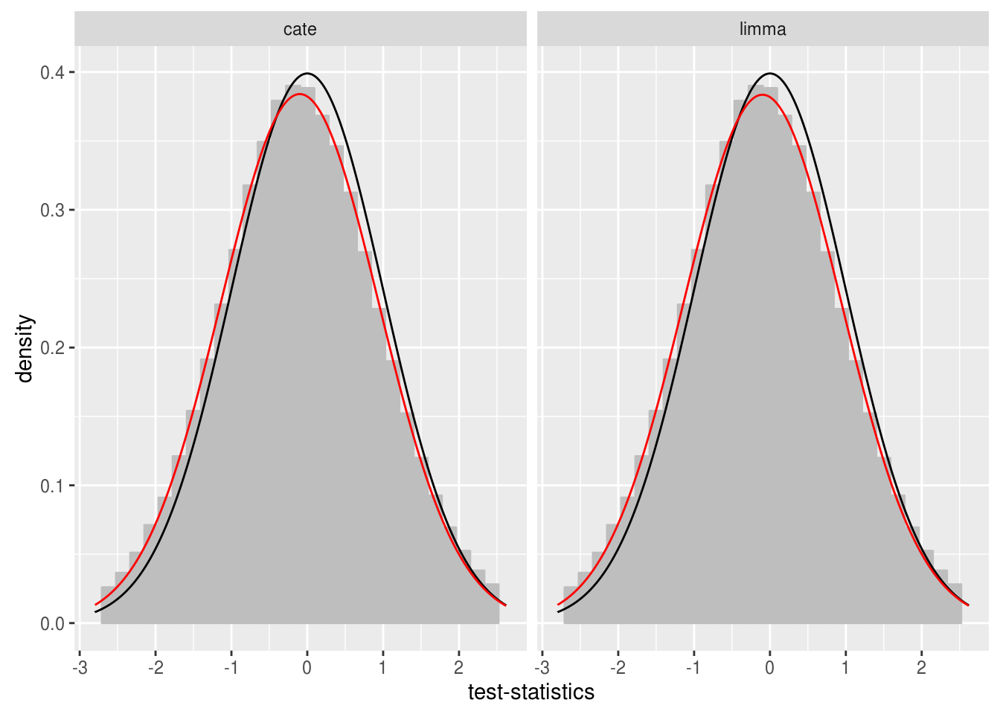
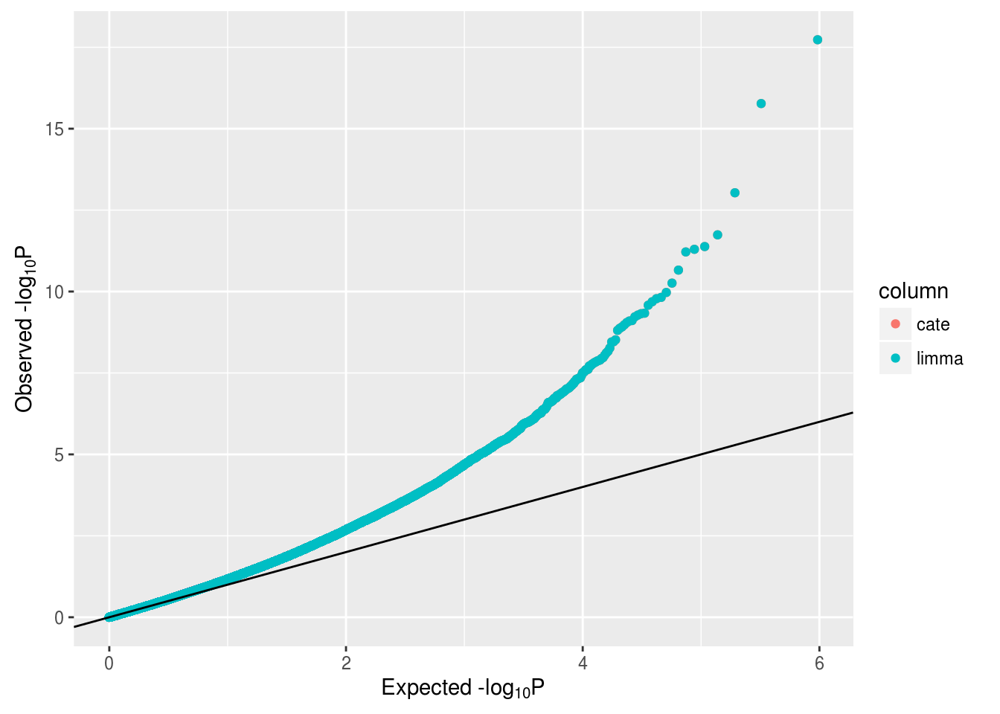

M-values valid to run EWAS using linear regression approach.
Here skipping the empirical Bayes step, because of the large sample size this should give very similar results?
covariates <- c("DNA_BloodSampling_Age", "Sex", "Sentrix_Position", "Smoking", "Mono_Perc", "Baso_Perc", "Eos_Perc", "Neut_Perc")
design <- data.frame(Int=1, colData(mvalues)[, covariates])
complete <- apply(design, 1, function(x) sum(is.na(x)) == 0 )
data <- assays(mvalues)$data
design <- design[complete,]
data <- data[,complete]
dim(data)## [1] 483098 22design$Sentrix_Position <- as.integer(as.factor(design$Sentrix_Position))library(limma)
fit <- lmFit(data, design)
tstat <- fit$coef/fit$stdev.unscaled/fit$sigma
pval <- 2*pnorm(-abs(tstat[,2]))
padj <- p.adjust(sort(pval, decreasing=FALSE), method="bonf")
head(padj[padj < 0.05])## cg26712943 cg00661620 cg08595806 cg15993871 cg26492480
## 8.967774e-13 8.168777e-11 4.483074e-08 8.776593e-07 2.008576e-06
## cg00215551
## 2.439025e-06Often unobserved technical or biological covariates can be present. A recent approach available from cran cate is able to estimate the unobserved covariates. There are other methods as well, …
library(cate)
fa <- cate.fit(design[,2,drop=FALSE], design[,-2], t(data), r = 3, calibrate=FALSE, adj.method="naive")Here we assumed the presence of three unobserved covariates but cate has two method implemented that can estimate the precise number of unobserved covariates.
As is seen in GWAS, inflation, also occurs in EWAS. And not only inflation but bias can be observed too. We developed a package called bacon to estimate and correct for bias and inflation for EWAS (and TWAS)(Iterson, Zwet, and Heijmans 2017).
library(bacon)
tstats <- cbind(limma=tstat[,2], cate=as.vector(fa$beta.t))
bc <- bacon(tstats)## Detected 14 workers!
## Running in parallel!bc## Bacon-object containing 2 set(s) of 483098 test-statistics.
## ...estimated bias: -0.099,-0.099.
## ...estimated inflation: 1,1.
##
## Emprical null estimates are based on 5000 iterations with a burnin-period of 2000.print(plot(bc, type="hist"))## `stat_bin()` using `bins = 30`. Pick better value with `binwidth`.## Warning: Removed 19324 rows containing non-finite values (stat_bin).## Warning: Removed 2 rows containing missing values (geom_bar).## Warning: Removed 9662 rows containing missing values (geom_path).
## Warning: Removed 9662 rows containing missing values (geom_path).
print(plot(bc, type="qq"))
head(pval(bc))## limma cate
## cg01707559 0.80294660 0.80239960
## cg02004872 0.27920089 0.27842475
## cg02494853 0.34612971 0.34532481
## cg03244189 0.02563783 0.02542783
## cg03706273 0.60274926 0.60257113
## cg04023335 0.80514641 0.80521353Iterson, M. van, E. W. van Zwet, and B. T. Heijmans. 2017. “Controlling bias and inflation in epigenome- and transcriptome-wide association studies using the empirical null distribution.” Genome Biol. 18 (1): 19.